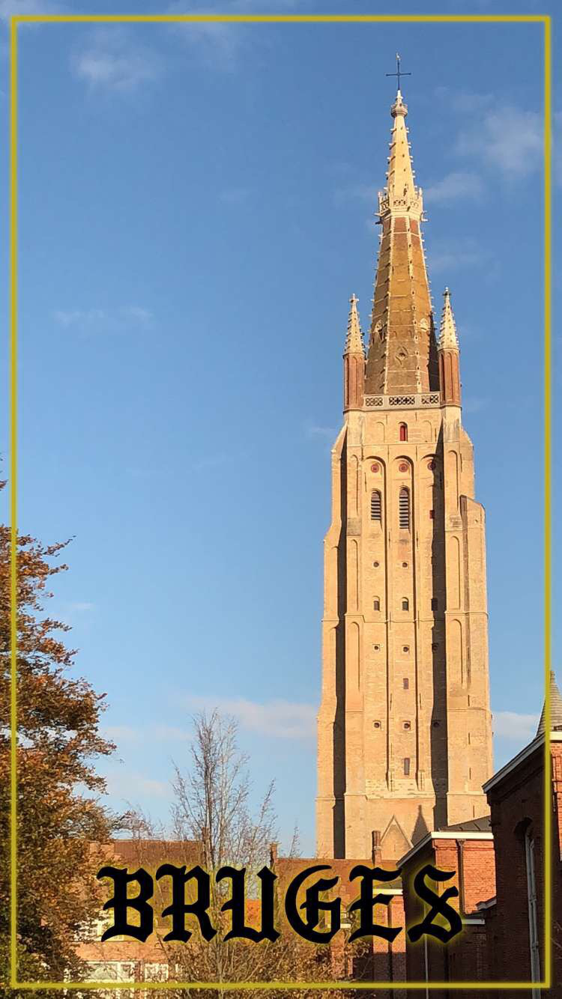
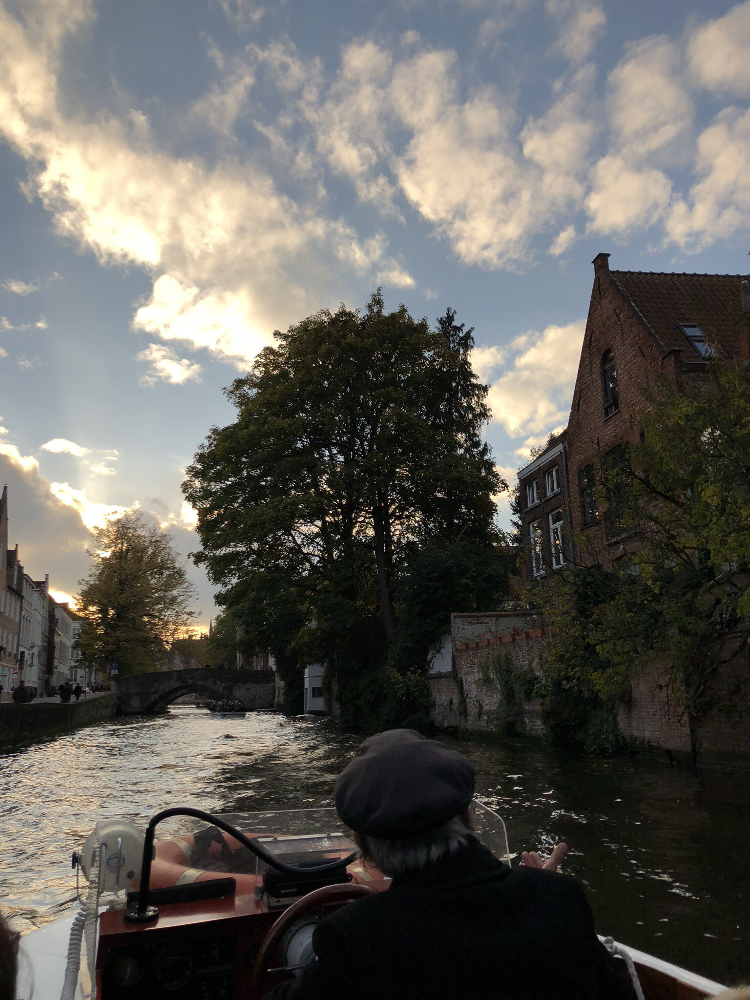

  I finally have a new phone and I’m back to blogging, so I can write about my amazing day trip to Bruges last week, 02/11/17!
As I’ve said before, the public transport in Belgium is very good. I was able to buy a JUMP 10 ticket for under 26’s for €52, which allows me 10 journeys (making it €5.20 per single). This is valid for 1 year, and has lots of flexibility. I can either make 10 singles on my own, or travel as a group of 10 and all of us can use the same ticket once. Also, with this ticket I can travel to anywhere in Belgium! The cost is the same regardless of where you go so long as it’s in Belgium. I’ve already been to Antwerp and Liège and I can’t wait to discover more places!
A few days before going we watched the film ‘In Bruges’ which I would recommend as its pretty funny! Plus it’s always cool seeing somewhere in real life after seeing it in a movie, especially the bell tower.
In terms of sightseeing we didn’t plan much beforehand. We got off the train around lunch time, so after wandering for a while our first plan was to find somewhere to eat. This is where I’d really recommend checking Trip Advisor’s ‘Cheap Eats’. We found this great pasta place called ‘Bocca’ (Dweersstraat 13, Bruges 8000 Belgium), where we got a huge box of pasta for €6! This meant we had eaten well but still had money for hot chocolate later on in the day 😋
We also went on a boat ride, which was only €8 for 30mins. This was a really fun and beautiful way to see around the town, and the commentary from our ‘captain’ was interesting too.
We also saw inside one of the various churches, which was very beautiful, before looking around the shops. Bruges is incredibly touristy and the shopping is surprisingly good considering the size of the place - on par with Brussels I would say!
Bruges is definitely one of the most picturesque places I’ve been to, and I definitely plan on going back later this year to check out their Christmas markets!
À bientôt!